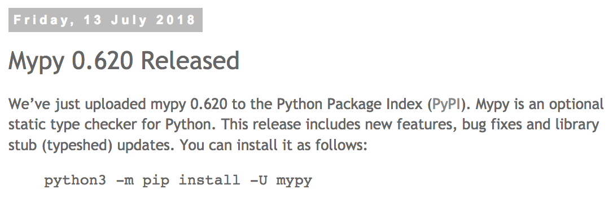

Migrating existing codebases to using type annotations
Stephan Jaensch
@s_jaensch
Yelp's mission
To connect people to great local businesses
What I'll talk about
- What are type annotations, and why you should use them
- How do you incrementally migrate an existing codebase to them
- What are some issues you might encounter
- How can type annotations help across services
Type annotations - the what and why
def hello(who: str) -> str:
return 'Hello, {}'.format(who)
hello(5)
error: Argument 1 to "hello" has incompatible type "int";
expected "str"
Migrate a codebase to using type annotations
- Goal: All code is type annotated
- Incrementally annotate code
- Make sure checks are run for annotated code
The mypy type checker
Enforce annotations
[mypy]
check_untyped_defs = True
disallow_untyped_calls = False
disallow_untyped_defs = True
follow_imports = silent
ignore_missing_imports = True
python_version = 3.6
strict_optional = True
warn_redundant_casts = True
Checking source code on commit
Configuring pre-commit
- repo: local
hooks:
- id: mypy
name: mypy
entry: mypy
language: python
language_version: 'python3.6'
additional_dependencies: ['mypy']
args: ['--config-file', 'mypy-pre-commit.ini']
files: ^package_name/.+\.py$
pre-commit install -f --install-hooksChecking source code on commit

Running mypy as part of your test suite
[mypy]
ignore_missing_imports = True
python_version = 3.6
strict_optional = True
warn_redundant_casts = True
Type your data
from typing import Iterable, NamedTuple, Optional
class Business(NamedTuple):
id: int
name: str
photos: Iterable[Photo]
address1: Optional[str]
address2: Optional[str]
address3: Optional[str]
city: str
latitude: float
longitude: float
...
typed dictionaries
from typing import Optional
from mypy_extensions import TypedDict
class BusinessDict(TypedDict):
id: int
name: str
address1: Optional[str]
address2: Optional[str]
business = BusinessDict(
id=42, name='Yelp', address1=None, address2=None,
)
value = business.get('adress2', '')
error: TypedDict "BusinessDict" has no key 'adress2'
How to type the helper function?
def namedtuple_from_dict(
nt_class,
dict_values,
):
"""Create a namedtuple from a dict, using the namedtuple
attribute names to look up values in the dict."""
return nt_class._make(
dict_values.get(k) for k in nt_class._fields
)
How to type the helper function?
def namedtuple_from_dict(
nt_class: Type[NamedTuple],
dict_values: Dict,
) -> NamedTuple:
"""Create a namedtuple from a dict, using the namedtuple
attribute names to look up values in the dict."""
return nt_class._make(
dict_values.get(k) for k in nt_class._fields
)
error: Incompatible return value type
(got "NamedTuple", expected "Business")
error: Argument 1 to "namedtuple_from_dict" has incompatible
type "Type[Business]"; expected "Type[NamedTuple]"
Using Generics
Struct = TypeVar('Struct', bound=NamedTuple)
def namedtuple_from_dict(
nt_class: Type[Struct],
dict_values: Dict,
) -> Struct:
"""Create a namedtuple from a dict, using the namedtuple
attribute names to look up values in the dict."""
return nt_class._make(
dict_values.get(k) for k in nt_class._fields
)
error: Value of type variable "Struct" of "namedtuple_from_dict"
cannot be "Business"
The solution
Struct = TypeVar('Struct')
def namedtuple_from_dict(
nt_class: Type[Struct],
dict_values: Dict,
) -> Struct:
"""Create a namedtuple from a dict, using the namedtuple
attribute names to look up values in the dict."""
return nt_class._make( # type: ignore
dict_values.get(k) for k in nt_class._fields # type: ignore
)
NamedTuple and count / index
class Pagination(NamedTuple):
count: int
index: int
error: Incompatible types in assignment (expression has type "int",
base class "tuple" defined the type as
"Callable[[Tuple[int, ...], Any], int]")
error: Incompatible types in assignment (expression has type "int",
base class "tuple" defined the type as
"Callable[[Tuple[int, ...], Any, int, int], int]")
Redefining the type of properties
class RegistryMetaclass(type):
"""Error mapping registry class."""
registry: Dict[str, Type['BaseErrorMapping']] = {}
key_name: str = 'error_id'
class ValidationRegistryMetaclass(RegistryMetaclass):
registry: Dict[str, Type['BaseValidationError']] = {}
key_name = 'exc_cls'
error: Incompatible types in assignment (expression has type
"Dict[str, Type[BaseValidationError]]", base class "RegistryMetaclass"
defined the type as "Dict[str, Type[BaseErrorMapping]]")
How to annotate descriptors
T = TypeVar('T')
V = TypeVar('V')
class SetOnceProperty(Generic[T, V]):
def __get__(self, instance: Optional[T], owner: Type[T])
-> Union[V, 'SetOnceProperty']:
if instance is None:
return self
return self._property_map[instance]
def __set__(self, instance: T, value: V) -> None:
if instance in self._property_map:
raise AttributeError('this attribute can only be set once.')
self._property_map[instance] = value
class BizAppContext():
biz_user_id = SetOnceProperty['BizAppContext', int]()
...
Recursive types
class Category(NamedTuple):
id: int
name: str
children: List['Category']
error: Recursive types not fully supported yet,
nested types replaced with "Any"

The business fixture
@pytest.fixture
def business_id(db_session):
return business_factory.create(db_session)
def create(
session,
name='Levchins',
…
):
business = Business(
name=name,
…
)
session.add(business)
session.commit()
return business.id
Why not use models directly?

Why not use models directly?
def biz_user_create(session, business_id=None, email=None, …):
"""Creates a biz_user with password 'password'"""
biz_user = BizUser(
…
)
session.add(biz_user)
session.flush()
session.add(
BizUserPrivate(
biz_user_id=biz_user.id,
email=email,
)
)
if business_id:
add_biz_user_to_business(session, biz_user.id, business_id)
session.commit()
return biz_user.id
Downstream services with data creation APIs
@pytest.fixture
def question(question_answer_client, business_id, confirmed_user_id):
return question_answer_client.business.create_question(
body={
'text': 'Test question...?',
'platform_source': 'other',
'subscription': False,
},
business_id=business_id,
).result().question
Pros and Cons
- Natural fit for pytest fixtures
- Much easier data creation
- People create separate data entries for each test "automatically"
- Need to maintain data creation factories
- Potentially slower (not sharing data across tests)
How to make tests faster

Source: http://www.methodsandtools.com/tools/selendroid.html
Execute tests in parallel with pytest
$ pip install pytest-xdist
$ python -m pytest -s -vvv -n 4 tests/acceptance

Execute tests in parallel with pytest

Takeaways
- Use fixture factories for faster development and more correct test data
- Convert tests for test isolation and repeatability
- Take advantage of it by executing tests in parallel
Other talks by Yelpers
"Write more decorators (and fewer classes)"
by Antonio Verardi; Tuesday, 10:30, Anfiteatro 2
"Teeing up Python: Code Golf"
by Lee Sheng; Wednesday, 12:10, PyCharm Room
Questions?
sjaensch@yelp.com / @s_jaensch
https://github.com/sjaensch/faster_end_to_end_tests_talk.git